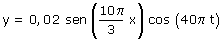

a)  Esta ecuación corresponde a una onda estacionaria formada por la interferencia de dos ondas progresivas viajando en sentidos contrarios Identificando los coeficientes de la ecuación se conocen los parámetros de las ondas que interfieren
|
||||||||||||